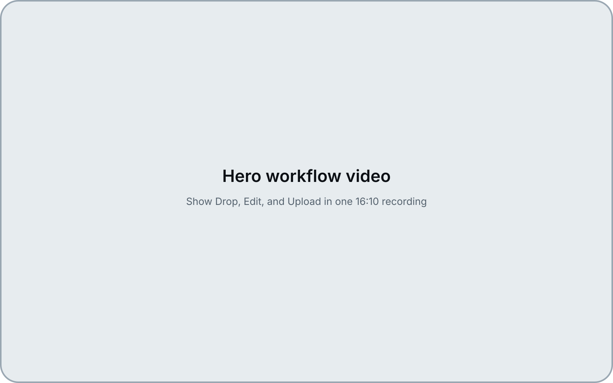
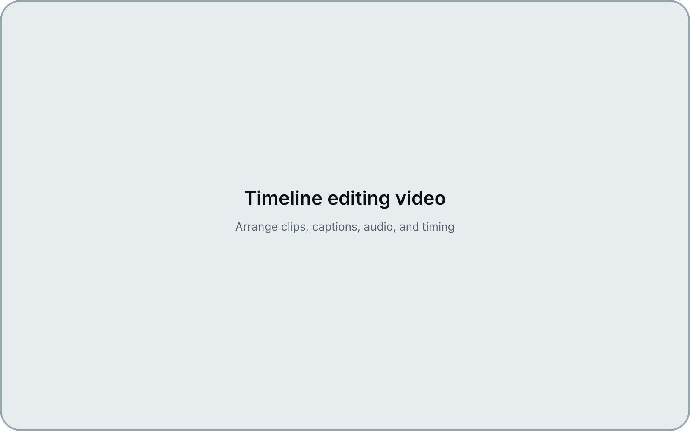
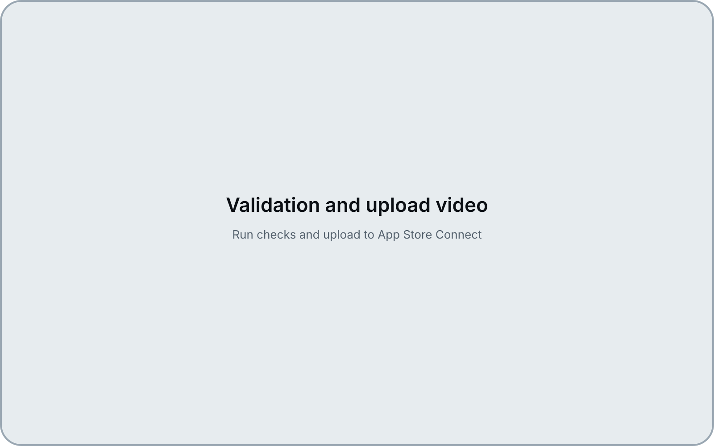
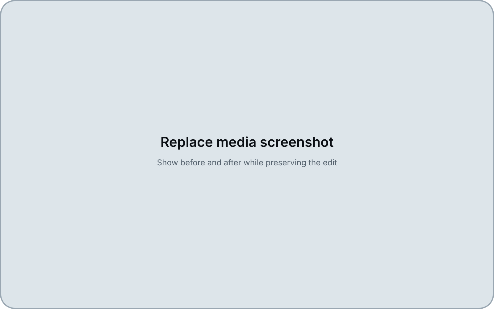
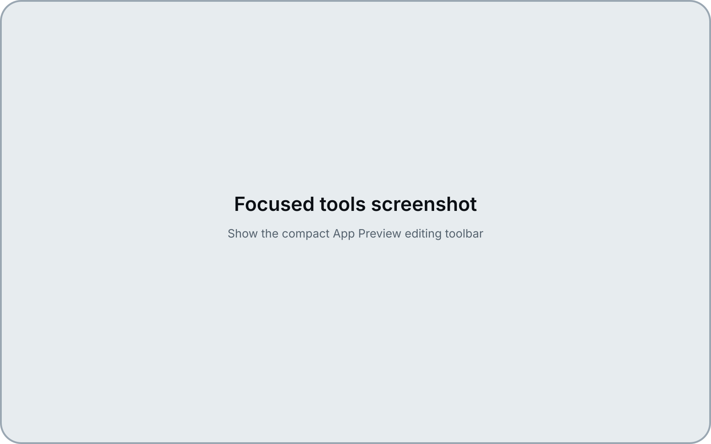
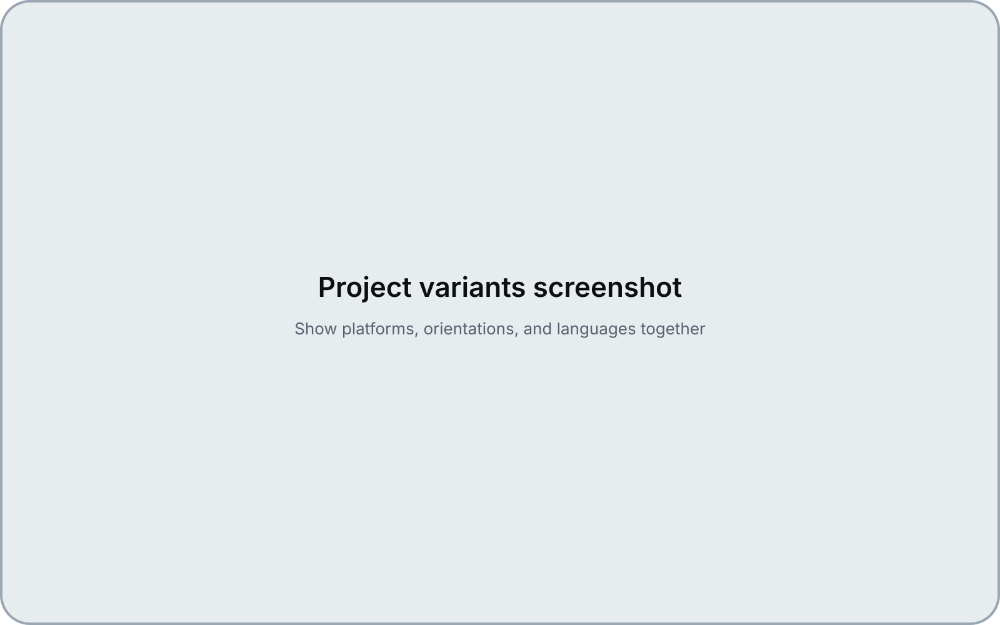

Drop.
Import screenshots, screen recordings, images, audio, and brand assets from Finder.
Start with the app media you already have. No blank-canvas setup. No generic video project to configure first.
A focused Mac app for making App Store Preview videos without fighting a full video editor.
Create previews from your screenshots, recordings, text, audio, and app assets. Update them when your UI changes. Export locally or upload to App Store Connect when everything is ready.

If you have ever opened a full video editor just to make a 30-second App Store Preview, you already know the problem.
The work is not really “video editing.”
It is arranging app screens, trimming recordings, keeping things inside safe areas, checking export settings, updating the video after UI changes, and getting the final file into App Store Connect.
App Preview Editor is built around that exact workflow.
Import screenshots, screen recordings, images, audio, and brand assets from Finder.
Start with the app media you already have. No blank-canvas setup. No generic video project to configure first.
Arrange clips, add text, adjust timing, and polish the preview on a focused timeline made for App Store videos.
You get the tools you need for preview production, without the extra weight of a full editing suite.

Run checks, export your preview, or upload to App Store Connect when your account and app target are configured.
Keep the last step inside the same workflow instead of jumping between tools.

App UIs change. Screenshots get replaced. Recordings get updated. Replace or relink media while keeping your timeline structure where possible, so every product update does not become a full rebuild.

Use Auto Arrange to create a first editable draft from your selected media, then refine it manually. It is not meant to replace your judgment. It is meant to get you past the empty timeline faster.

The app is built around preview length, format, safe areas, export settings, platform variants, and App Store Connect delivery. Not YouTube videos. Not social clips. Not a cinematic editing suite. Just App Preview production.
Create previews for iPhone, iPad, Mac, Apple Vision Pro, portrait, landscape, and different languages inside one project. When your app changes, you can update the whole set without losing track of every variant.
Export locally in H.264 or ProRes 422 HQ, reveal files in Finder, or upload directly to App Store Connect once your credentials and app targets are configured.
A single app update can mean several preview videos: different devices, orientations, screen sizes, and languages.
App Preview Editor keeps those versions organized in one place, so you can work across the full App Store set instead of managing separate video files everywhere.

No. It is focused on creating and delivering App Store Preview videos.
That is the point. It keeps the workflow smaller, clearer, and closer to what app developers actually need.
Indie Apple developers, small app teams, product designers, app marketers, and ASO teams who need to create App Store Preview videos without using a full editing suite.
Yes, when your App Store Connect API credentials and app targets are configured.
The app can load preview slots and upload previews from the same workflow.
Yes. You can keep platform and language versions together in the same project.
Yes. You can replace or relink screenshots and recordings while preserving your edit where possible.
It is designed for App Preview workflows across iPhone, iPad, Mac, and Apple Vision Pro.
Auto Arrange can use Apple Foundation Models on supported Macs to help create a first editable draft from your media.
Every result remains editable. It is a starting point, not an automatic finished video generator.
No. App Preview Editor helps you prepare and check preview files, but it does not guarantee App Store approval.

Join the waitlist or apply for beta access.